Curated Data for Efficient Learning (CDEL)
Lead organizer, ECCV 2026 in Malmö and ICCV 2025 in Honolulu
I am a PhD student at MIT CSAIL, where I study machine learning for vision and graphics. I am extremely fortunate to be co-advised by Vincent Sitzmann and Antonio Torralba.
Before MIT, I was part of the Master of Science in Robotics program at Carnegie Mellon, supported by an NSF fellowship. There I had the great pleasure of being advised by Simon Lucey (now director of the Australian Institute for Machine Learning) and Jun-Yan Zhu, and collaborating with Alexei Efros at UC Berkeley and Antonio Torralba at MIT.
Prior to CMU, I did my undergraduate studies at Louisiana Tech, completing degree programs in Computer Science, Mathematics, and Cyber Engineering. I am forever grateful to the professors who set me on this path, especially Mike O’Neal, Jonathan Walters, and Jean Gourd.
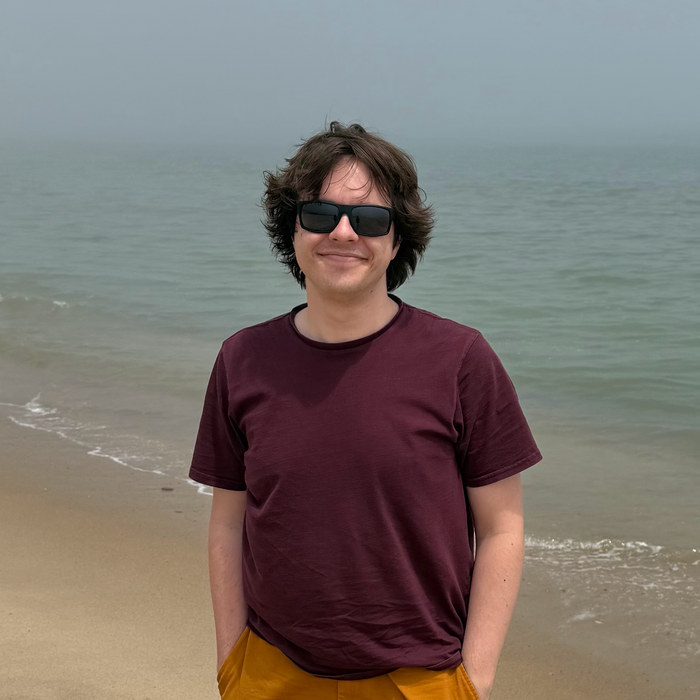
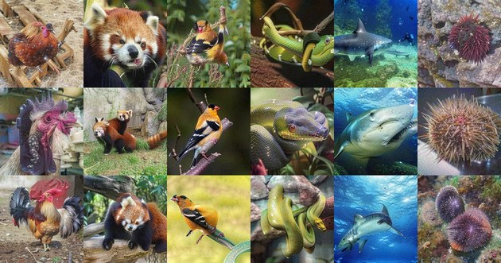
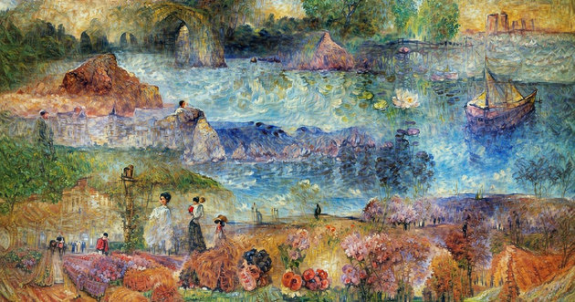
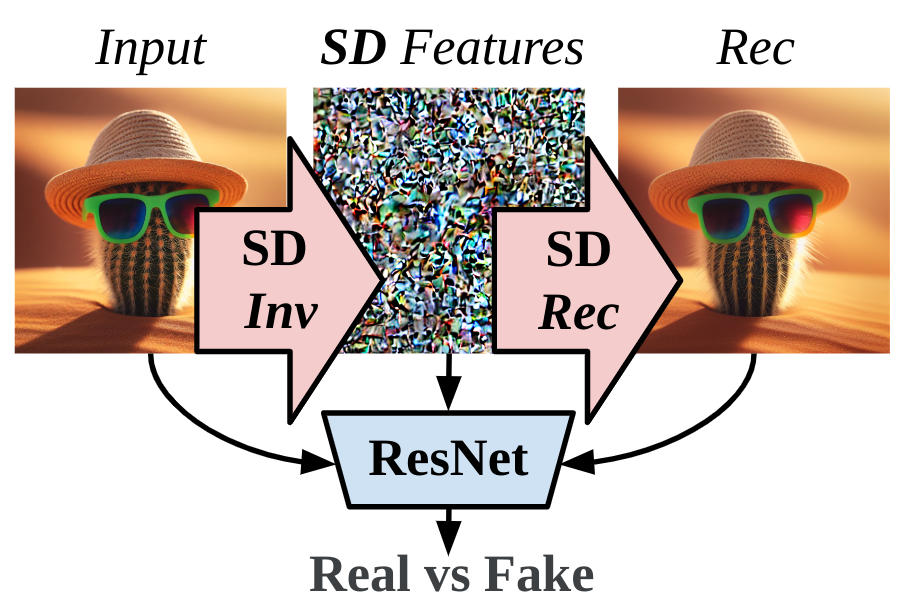
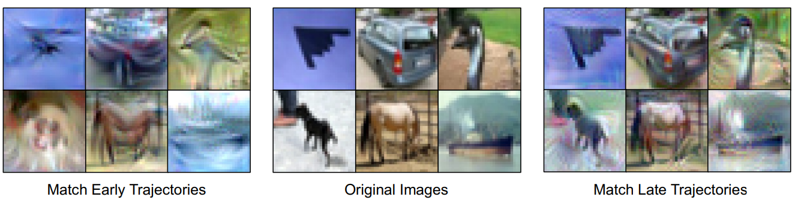
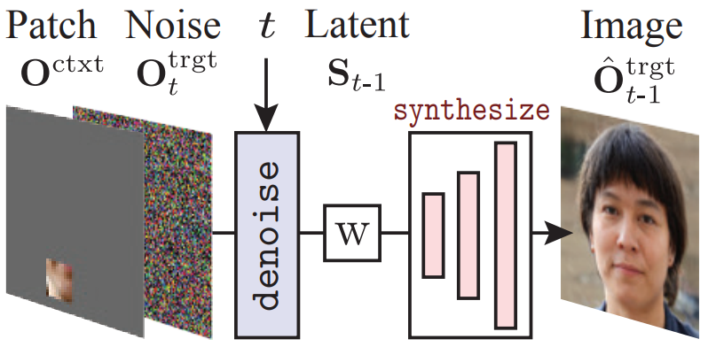
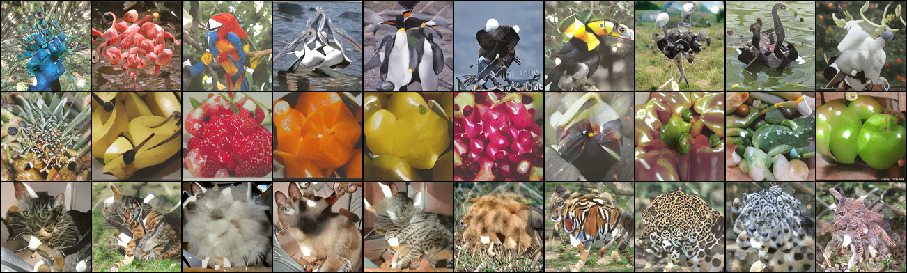
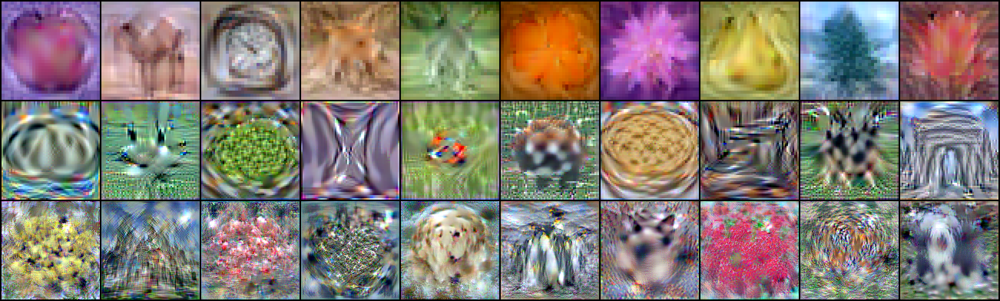
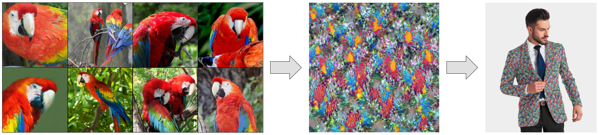
CVPR 2022 workshop on computer vision for fashion, art and design
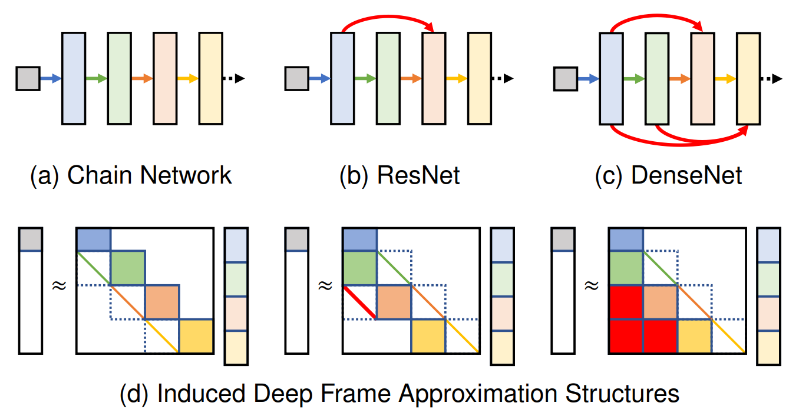
IEEE Transactions on Pattern Analysis and Machine Intelligence, 2022
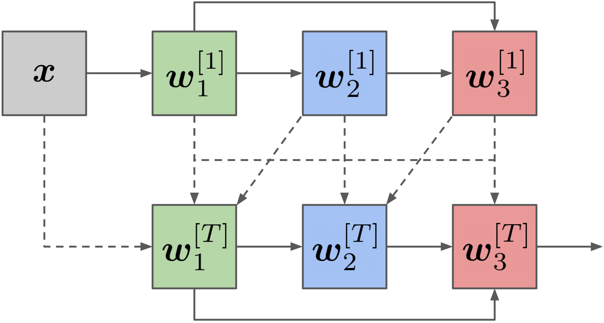
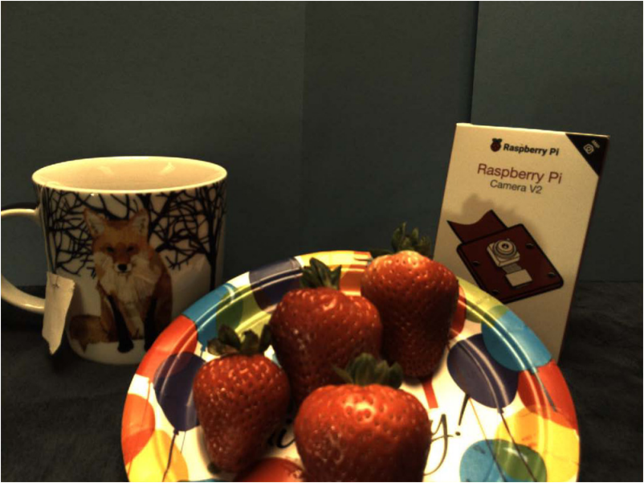
Journal of Electronic Imaging, 2017
Lead organizer, ECCV 2026 in Malmö and ICCV 2025 in Honolulu
PhD in AI and decision making, Cambridge, Massachusetts
BS in computer science, BS in mathematics, BS in cyber engineering, Ruston, Louisiana

Research assistant at MIT CSAIL, advised by Vincent Sitzmann
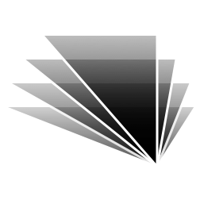
Research assistant at MIT CSAIL, advised by Antonio Torralba
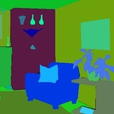
Research intern in Pittsburgh, with Simon Lucey
Research assistant at Carnegie Mellon, advised by Jun-Yan Zhu

Research intern at Stennis Space Center, with Robert Ryan